Design
Trained as a graphic designer, I still think in grids, type and light. The same eye now goes into brands, films made in code and objects I print myself.
ASP Łódź · MA, 2022
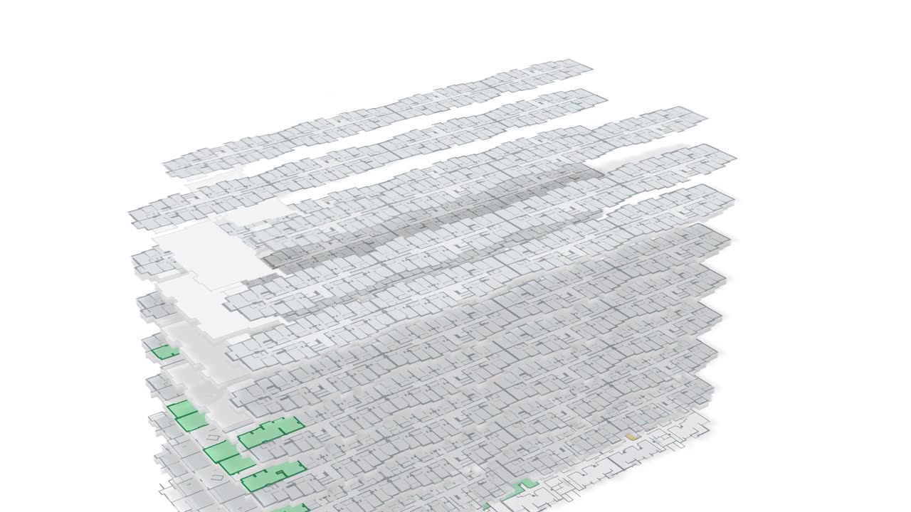
2026 · HTML · GSAP · ffmpeg
DOBROGRAD, a product film made in code
Made without an editing timeline: every frame is HTML, CSS and GSAP rendered to video, with the sound placed to the frame.
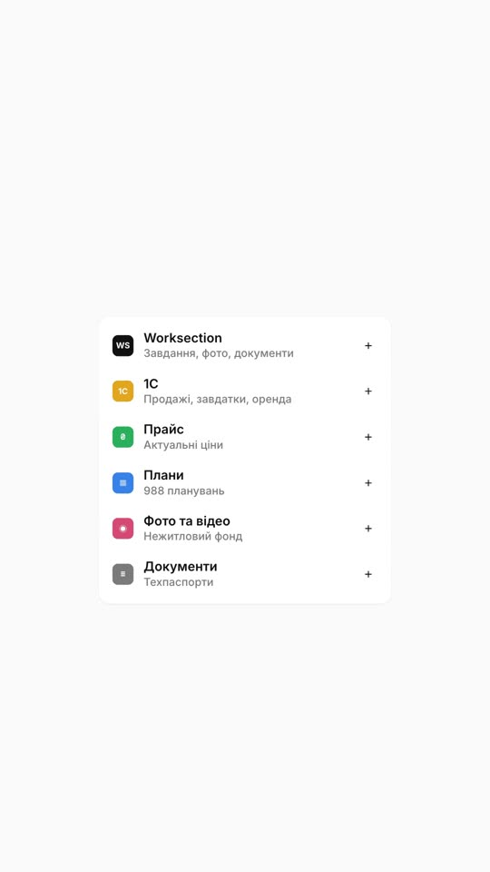
2026 · 9:16
Catalogue reel
Vertical film for the sales catalogue. Each element enters because the one before it moved.
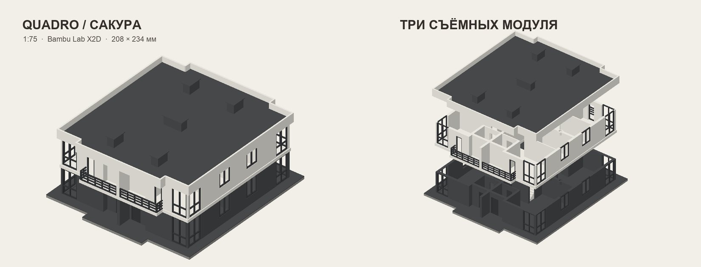
2026 · 1:75 · Bambu X2D
Townhouse model, 1:75
Four sections, two floors and balconies, redrawn for a desktop printer. Storeys and roof sit on magnets. Hover and they lift apart; drag to turn.
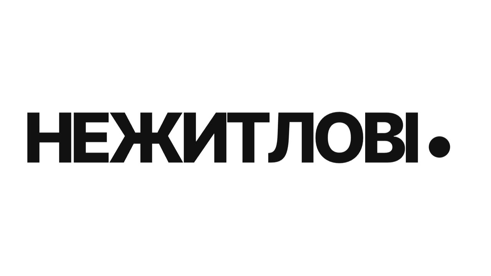
2026 · Kinetic type
One word, five catalogues
The opening of the portal film. Each word pushes the next one out and the loop closes on the first.
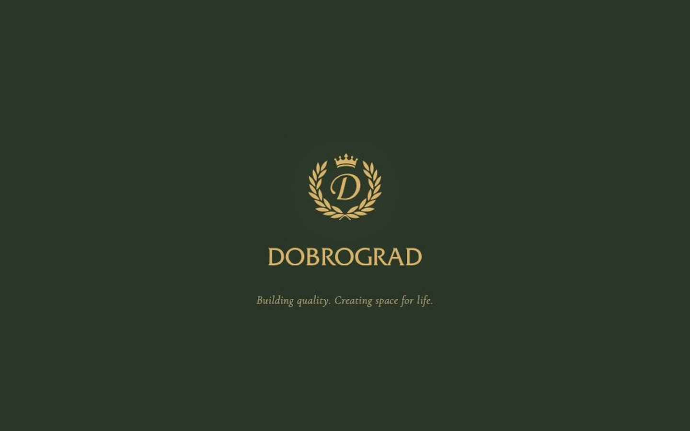
Live · EN PL UA
Dobrograd brand book
Positioning, logo system, typography and colour rules for a 15-year-old developer that had none.
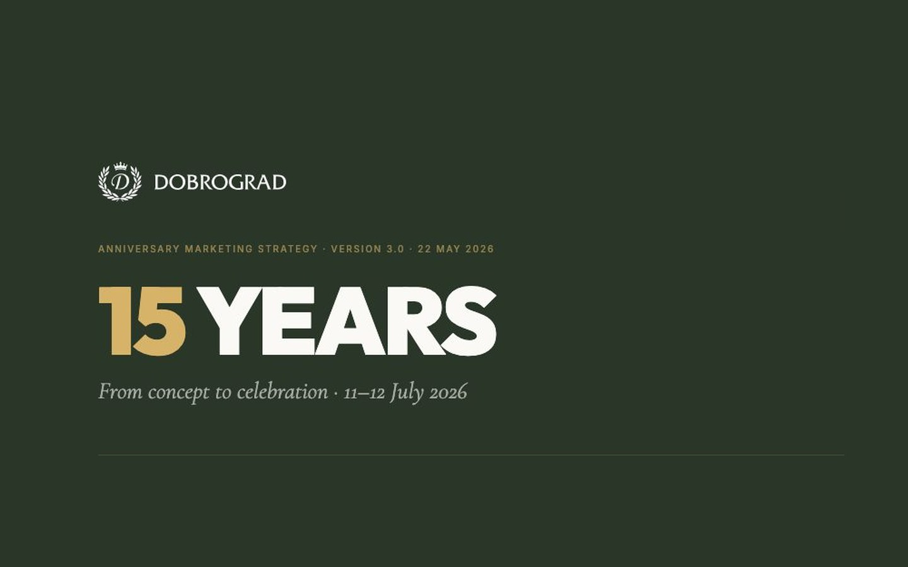
Live · EN PL UA
15 years of Dobrograd
An 18-part anniversary programme: concept, audience zones, the path from an ad to a signed contract, content plan.
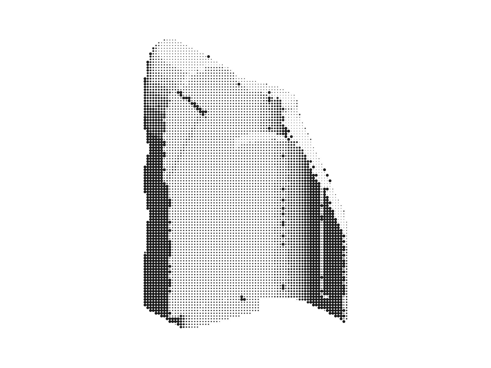
2026 · Shapr3D · Bambu X2D
Grip for a Pentax ME
Holds an iPhone on a 1976 film camera with MagSafe. Measured from a 3D scan, printed and refitted through 56 versions.
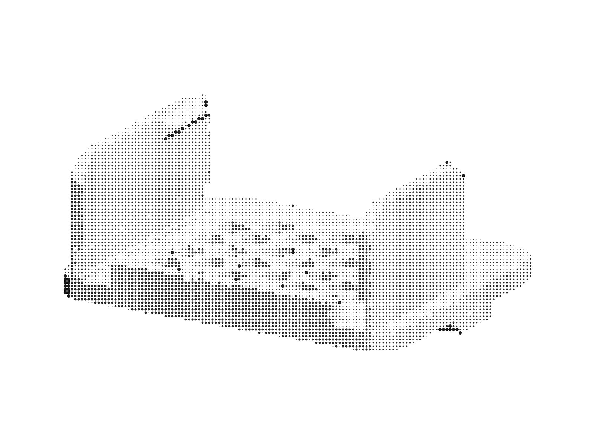
2026 · Python · 3MF
Holder for a measuring head
A wall mount for an IKEA Skådis board with a honeycomb front insert, generated from a Python script and checked for fit before printing.
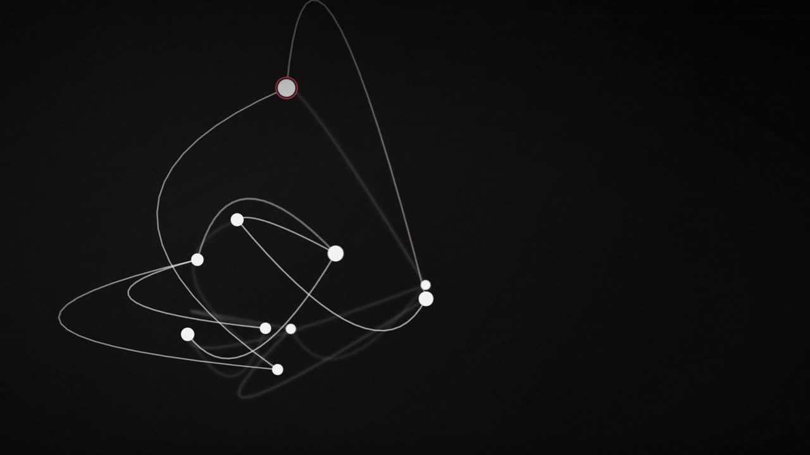
Today's search, drawn as a tangle
Every question bounced between people and folders. The film opens on that mess.
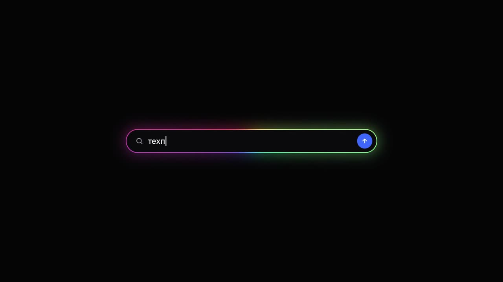
Nine files, one search
Nine scattered files turn into one search field.
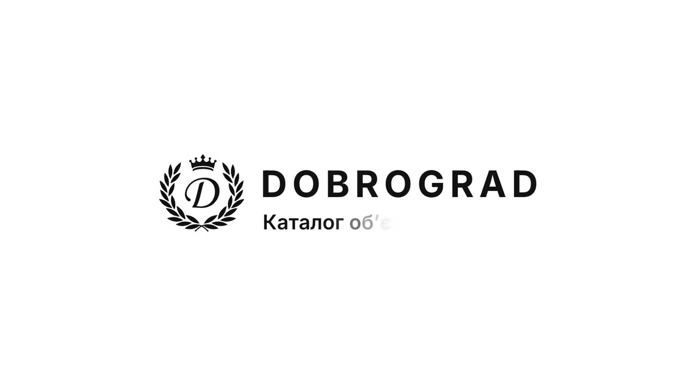
The crest, drawn in
The film's end card: the laurel draws in, then the letter and the wordmark.
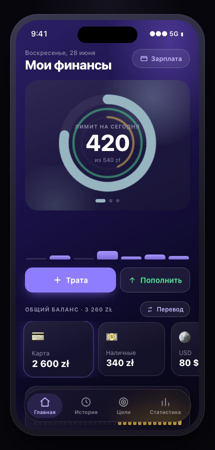
2026 · PWA
Money, a personal finance app
A daily limit until payday, rings like an Apple Watch, liquid glass. Designed and built for myself.
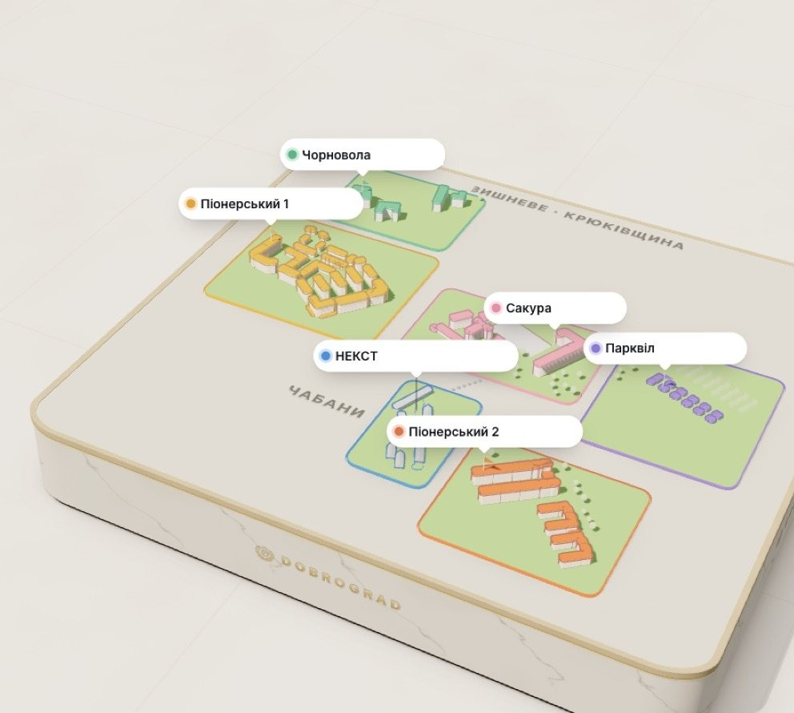
2026 · three.js · OSM
The map as a diorama
Every complex of the group as a clay model on a table, built in three.js on OpenStreetMap data.
Studies I art-directed in Midjourney.
2023 and 2024. The pixels are the machine's; the brief, light and the one frame out of dozens were mine.
Training and design roles.More
- 2017 → 2022Academy of Fine Arts in ŁódźMaster's degree, computer graphics.
- 2018 → 2024Freelance graphic designerMore than 100 projects for game studios and publishers. A contract with 4A Games, 2020 to 2021.
- 2018 → 2020iSpot · Apple Premium PartnerVisual merchandiser. One display standard across 13 stores, accessory sales up 15%.
- 2026DobrogradRebrand, brand book, anniversary, product films and the visual language of the sales portal.
Anatomy of a promptMore
These are studies I generated in Midjourney in 2023 and 2024, when image models first got good. The pixels are the machine's. The brief, composition, light, palette and the choice of one frame out of dozens were mine.
I keep them as a record of how I learned to direct an image model.
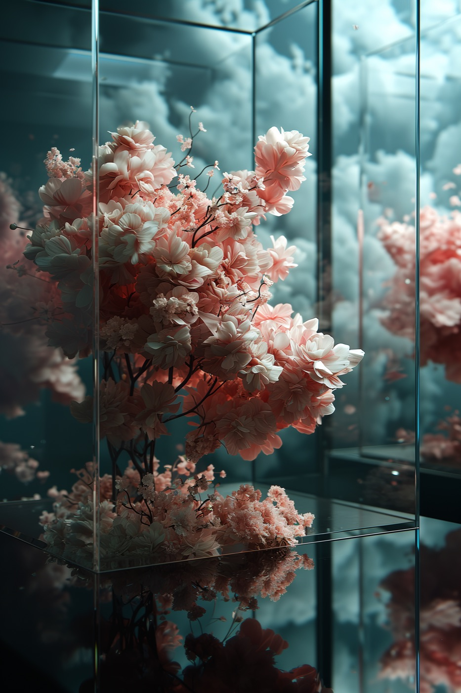
Anatomy of a prompt
peony flower art exhibition with transparent glass case, in the style of ethereal and dreamlike atmosphere, minimalist stage designs, aesthetic, cherry blossoms, cubo-futurism, post-modern installation artist, glitch aesthetic --c 80 --s 100 --stylize 500 --ar 35:32